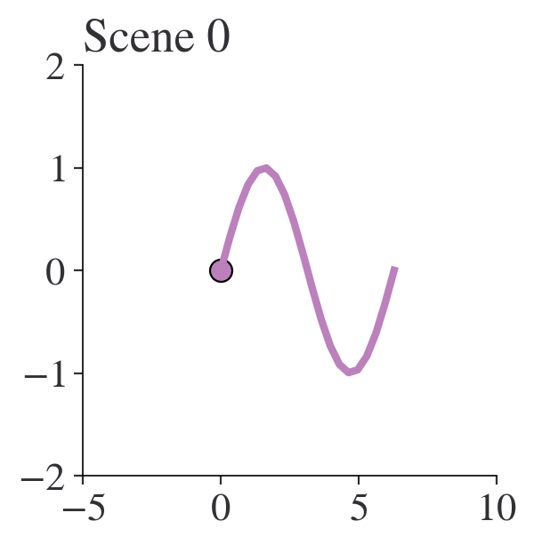
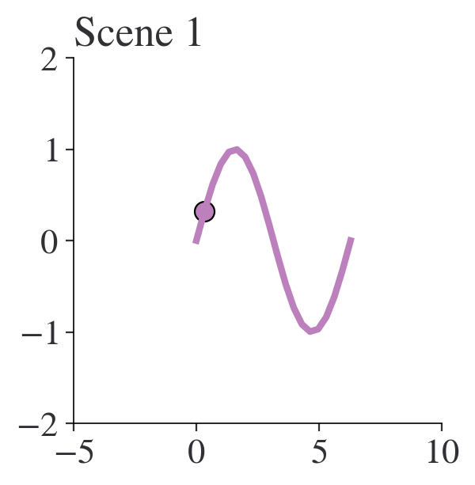
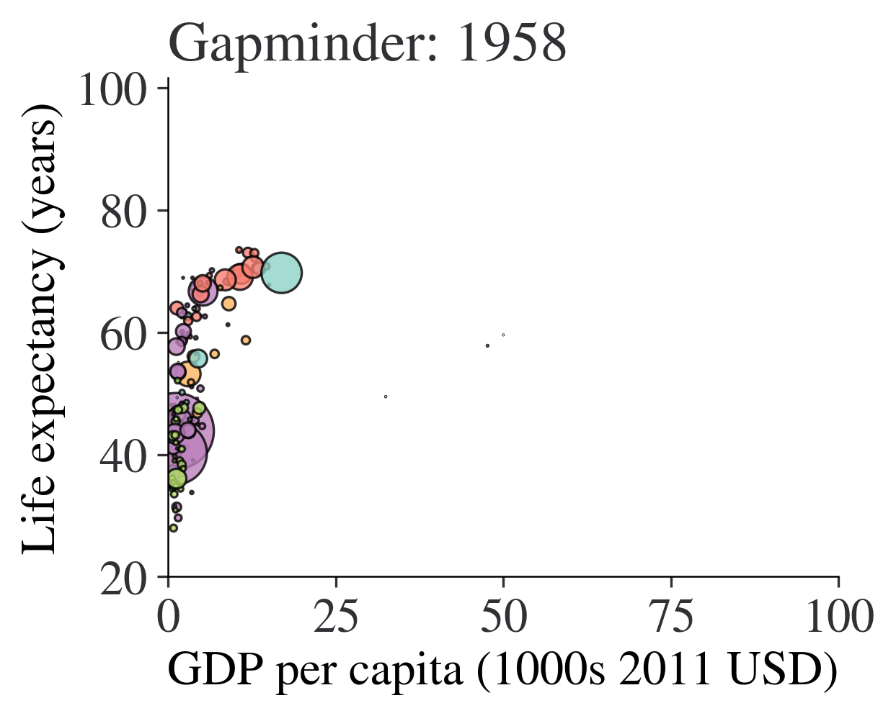

import matplotlib.pyplot as plt
import numpy as np
import pandas as pd
# Settings
# Set max rows displayed for readability
pd.set_option("display.max_rows", 6)
# Plot settings
plt.style.use(
"https://github.com/aeturrell/coding-for-economists/raw/main/plot_style.txt"
)Animation
Animations can be an effective way to show an extra dimension of your data, especially changes over time. Clearly, they’re not appropriate everywhere, eg in static media! For various reasons, they should be used sparingly, but-used rarely and with care-they can convey a message about data more effectively than a static chart ever would. Perhaps the most famous example of an animated chart is the legendary Hans Roslings’ gapminder animation covering 200 countries and 200 years of progress in income and health.
The most common scenario for wanting to create an animation is sharing on social media (gifs are ubiquitous on the internet) or displaying an animation of some of your results during a talk. In both these cases, creating a gif is probably the best and safest option. ‘The best’ because although video files tend to be very large (and thus difficult to share), gifs can be turned into small files, with a bit of tweaking. ‘The safest’ because even though presentation software like Microsoft’s Powerpoint can crumble when trying to play an embedded video file, gifs usually work just fine. And while video formats differ across operating systems, all of them will play gifs (all you need to play a gif is a browser such as Safari or Chrome). However, you can also create animations in other video formats, such as .mp4. The main downside of gifs is that they can produce quite jerky videos.
There are several ways to produce animations in Python, which we’ll come to in a moment. First though, let’s import some of the general packages we’ll need:
Plot To Animate
First, we need a plot to animate. And what better dataset than the gapminder data? “There is none!” I hear you shout at your computer. But hang on, perhaps we’d better see a simple demonstration of some of the principles we’ll be using first.
A video is a sequence of static images stitched together and replayed quickly, like a flickbook cartoon. We will use the same trick, a series of static images played after one another, to create animated charts. But this means we need to create the series of static images.
Let’s create individual images and index them with i. We want to move on to a new scene every time we increment i. We do this by creating a function that accepts i as a parameter and that modifies what is shown on the image. The below example shows how it can work: although the x and y arrays are always defined, and an x-y line plot is always shown, the ax.scatter() function is passed only the ith element of the x and y arrays. When we call plot_scene() with different values of i, the scene updates to the next moment in time. In the example below, the bead moves along 1/20th of its journey between 0 and 2\pi.
def plot_scene(i):
fig, ax = plt.subplots(figsize=(3, 3), dpi=100)
# Create an array
x = np.linspace(0, 2 * np.pi, 20)
# Create the y function
y = np.sin(x)
ax.plot(x, y)
ax.scatter([x[i]], [y[i]])
ax.set_title(f"Scene {i}")
plot_scene(0)
plot_scene(1)

Okay, so that’s the basic idea: a function of the scene that we can move forward through time. Later, we’ll stitch together the independent images. For now, let’s turn back to the gapminder data.
The gapminder data are from the excellent Our World in Data website, but they’ve been filtered a bit for this book. Let’s load them up:
df = pd.read_csv(
"https://github.com/aeturrell/coding-for-economists/raw/main/data/owid_gapminder.csv"
)
df.head()| Country | Year | Life expectancy | GDP per capita | Population | Continent | |
|---|---|---|---|---|---|---|
| 0 | Afghanistan | 1958 | 31.403 | 1298.0 | 8680000.0 | Asia |
| 1 | Afghanistan | 1959 | 31.925 | 1307.0 | 8834000.0 | Asia |
| 2 | Afghanistan | 1960 | 32.446 | 1326.0 | 8997000.0 | Asia |
| 3 | Afghanistan | 1961 | 32.962 | 1309.0 | 9169000.0 | Asia |
| 4 | Afghanistan | 1962 | 33.471 | 1302.0 | 9351000.0 | Asia |
Brilliant, that’s our data. But now we need a plot, with a few dimensions of data, and a way to progress that plot through time.
Let’s first setup the end phase of our plot, where we’ll eventually get to. This will be based on the final year in the data.
There are five dimensions displayed in the plot we’re recreating:
- continent, via colour
- income (GDP per capita), on the x-axis
- life expectancy, on the y-axis
- population, as bubble size
- year, as the time dimension
We have almost all of those columns already, but we do need to convert the list of continents to a list of colours. matplotlib has a built-in colour cycler, that we can use for this purpose. It is accessed via plt.rcParams['axes.prop_cycle'].by_key()['color']. To map the continents into colours, we’ll use a dictionary combined with the zip() function that ‘zips’ two lists together (if the lists are unequal it takes the shorter and as there are only five continents in our data but ten colours, this will happen).
print(plt.rcParams["axes.prop_cycle"].by_key()["color"])['#bc80bd', '#fb8072', '#b3de69', '#fdb462', '#fccde5', '#8dd3c7', '#ffed6f', '#bebada', '#80b1d3', '#ccebc5', '#d9d9d9']colour_mapping = dict(
zip(df["Continent"].unique(), plt.rcParams["axes.prop_cycle"].by_key()["color"])
)
df["colour"] = df["Continent"].map(colour_mapping)
df.head()| Country | Year | Life expectancy | GDP per capita | Population | Continent | colour | |
|---|---|---|---|---|---|---|---|
| 0 | Afghanistan | 1958 | 31.403 | 1298.0 | 8680000.0 | Asia | #bc80bd |
| 1 | Afghanistan | 1959 | 31.925 | 1307.0 | 8834000.0 | Asia | #bc80bd |
| 2 | Afghanistan | 1960 | 32.446 | 1326.0 | 8997000.0 | Asia | #bc80bd |
| 3 | Afghanistan | 1961 | 32.962 | 1309.0 | 9169000.0 | Asia | #bc80bd |
| 4 | Afghanistan | 1962 | 33.471 | 1302.0 | 9351000.0 | Asia | #bc80bd |
Okay, so we have all we need for our plot! Now we need to make a function that plots this when passed an index that gets mapped into a year. Note that while we have every year of data here, that may not be true in general so it’s always safer to map an index to the years that are available using a dictionary like so:
step_to_yr_map = dict(zip(range(len(df["Year"].unique())), df["Year"].unique()))def gapminder_at_year(i, gap_df):
"""Plots the gapminder data for a given step"""
if not isinstance(i, int):
return ValueError("i must be an integer.")
# Map steps into years
step_to_yr_map = dict(
zip(range(len(gap_df["Year"].unique())), gap_df["Year"].unique())
)
if i not in step_to_yr_map.keys():
return ValueError("i is beyond range of number of years.")
# Filtered version of data with only the relevant year
gdf_yr = gap_df[gap_df["Year"] == step_to_yr_map[i]]
plt.close("all")
fig, ax = plt.subplots(figsize=(4, 3), dpi=150)
ax.scatter(
x=gdf_yr["GDP per capita"] / 1e3,
y=gdf_yr["Life expectancy"],
c=gdf_yr["colour"],
s=gdf_yr["Population"] / 1e6,
alpha=0.8,
edgecolor="k",
)
ax.set_xlim(0, 100)
ax.set_ylim(20, gap_df["Life expectancy"].max() * 1.2)
ax.set_xlabel("GDP per capita (1000s 2011 USD)")
ax.set_ylabel("Life expectancy (years)")
ax.set_title(f"Gapminder: {step_to_yr_map[i]}")
plt.show()
# Test this out at the first step
gapminder_at_year(0, df)
We now have everything we need to create the individual scenes in our animation.
Creating Animations Using the Gif Package
The gif package is here to make it as easy as possible to create gifs from a series of plot images created using matplotlib, altair, or plotly. (In principle, this should also work for plotnine as it’s built on top of matplotlib). To install it, use pip install gif on the command line.
gif works by using function decorators (you can learn more about these in the advanced coding chapter). These ‘decorate’ existing functions using an @ symbol and change their behaviour. In this case, the decorator is @git.frame and it tells gif to remember this function as one frame of a gif.
Note that in the example below, we’ll make things a bit less high resolution and brief than we might optimally do, just to save on some file space.
A few tips:
- use a high resolution when creating the gif, as high as 900 dots per inch. In the below we use a quite large 400 dots per inch to save a bit of space but it still gives a hefty file size. However…
- …you can use an optimizer to then shrink that finished high res gif down to a more respectable size. In the below, pygifsicle is used to do this, a package that you will need to install separately. In our example, this takes the gif down to under 1MB.
- repeate the last frame multiple times; it allows the viewer to see where your animation ended up and gives a break before looping around again.
import gif
@gif.frame
def gapminder_at_year(i, gap_df):
""" Plots the gapminder data for a given step
"""
if(not isinstance(i, int)):
return ValueError("i must be an integer.")
# Map steps into years
step_to_yr_map = dict(zip(range(len(gap_df["Year"].unique())),
gap_df["Year"].unique()))
if(i not in step_to_yr_map.keys()):
return ValueError("i is beyond range of number of years.")
gdf_yr = gap_df[gap_df["Year"] == step_to_yr_map[i]]
plt.close('all')
fig, ax = plt.subplots(figsize=(4, 3), dpi=400)
ax.scatter(x=gdf_yr["GDP per capita"]/1e3, y=gdf_yr["Life expectancy"],
c=gdf_yr["colour"], s=gdf_yr["Population"]/1e6,
alpha=0.8, edgecolor='k')
ax.set_xlim(0, 100)
ax.set_ylim(20, gap_df["Life expectancy"].max()*1.2)
ax.set_xlabel("GDP per capita (1000s 2011 USD)")
ax.set_ylabel("Life expectancy (years)")
ax.set_title(f"Gapminder: {step_to_yr_map[i]}")
plt.tight_layout()
# How many iterations do we want?
total_num_years = len(df["Year"].unique())
# Produce the frames. Here, I'll only do the last 20 years to make the gif small
frames = [gapminder_at_year(i, df) for i in range(total_num_years-20, total_num_years)]
# A trick: repeat the last frame a few more times to let people see where the animation ends
frames = frames + [gapminder_at_year(total_num_years-1, df) for i in range(10)]
# Save the animation
gif.save(frames, Path("img/gapminder.gif"), duration=200, unit="ms", between="frames")
# Optimize the animation to make it smaller (and therefore easier to share)
from pygifsicle import optimize
optimize(Path("img/gapminder.gif"))
And there we have a (shortened and not-as-high-res-as-optimally) gapminder sequence! Can you spot the financial crisis?
A higher resolution run would smooth out that slightly roughened text. Now you’ve seen how it works, you can really run quite free with animations because, if you can draw it as a series of frames with matplotlib (and related libraries), plotly, or altair, you can animate it.
TipExercises
- Animate the bead on a sine curve we saw earlier using the gif package.
- Animate the complete gapminder sequence, from first year of data to 2018.
Making Animations Using the imagio Package
imagio is an alternative package for making animations, and works in a slightly different way, with an intermediate step between creating the static images and weaving them into a video. However, it allows you to stitch together jpg files as well as png files.
Let’s imagine that you have a folder for temporary files called ‘scratch’ and a directory for finished gifs called ‘img’. The code below gives an example of how you would use imageio to create 20 frames of a video and then weave them together into a .gif:
import imageio
def frame(i):
plt.close('all')
x = np.linspace(0, 2*np.pi, 20)
y = np.sin(x)
fig, ax = plt.subplots(figsize=(2, 2), dpi=900)
ax.plot(x, y, zorder=1, lw=0.5)
ax.scatter([x[i]], [y[i]], zorder=2)
ax.set_title(f"Scene {i}")
# Outputs files of name "frame000.png" etc., but you could use .jpg
plt.savefig(Path(f'scratch/frame{i:0>3d}.png'))
# Create the frames; this creates files within the 'scratch' directory
[frame(i) for i in range(20)]
file_names = list(Path("scratch").glob("*.png"))
file_names.sort()
# Now create the gif in the img directory:
writer = imageio.get_writer(Path("img/sin_bead.gif"), mode="I", fps=4)
for img_file in file_names:
image = imageio.imread(img_file)
writer.append_data(image)
from pygifsicle import optimize
optimize(Path("img/sin_bead.gif"))
imagio can also write to .mp4 files if needed, and has a host of other features not covered here.
Making animations with Plotly express
Plotly express also provides a way to do animations:
import plotly.express as px
fig = px.scatter(
px.data.gapminder(),
x="gdpPercap",
y="lifeExp",
size="pop",
color="continent",
animation_frame="year",
range_y=[30, 85],
hover_name="country",
log_x=True,
size_max=60,
)
fig.show()See Also
There are some excellent other tools out there. The command line tool ffmpeg is worth a look if you need fancier video options than are provided by the two tools we’ve met.
Matplotlib has a built-in animation feature too, though historically it has been a bit more tricky to use than tools like imagio or gif.
ahlive is a really promising package that is still in early development. It integrates directly with pandas and has some easy-to-use features for making sophisticated looking animations in just a few lines of code.
Finally, the master of animation in Python-but with a very steep learning curve-is manim, which makes extremely professional-looking mathematical animations. As an example, take a look at this video on Fourier Series that was created with manim.